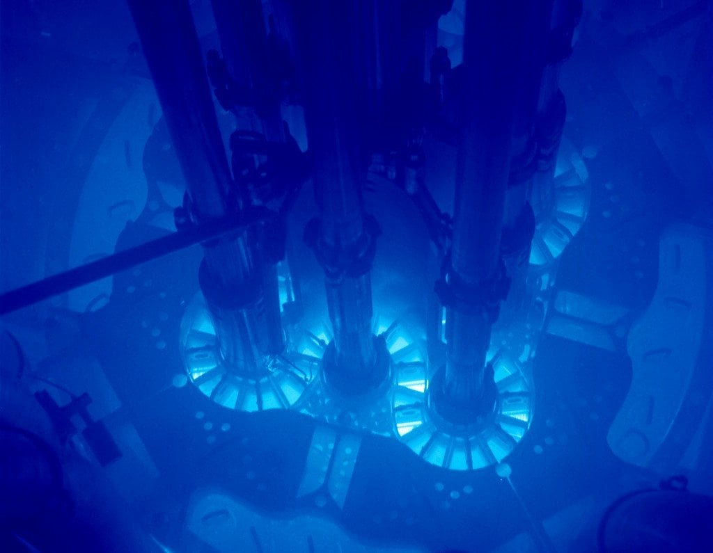
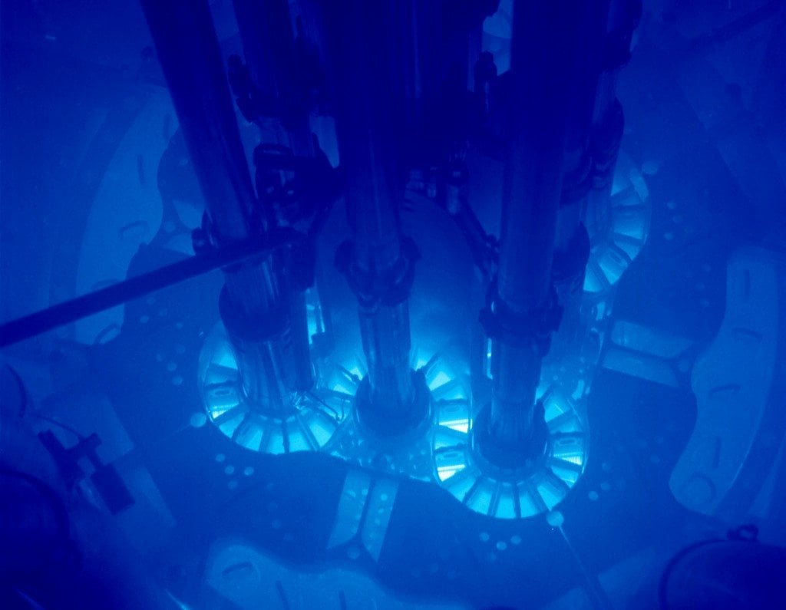

Liam Pinchbeck
Liam Pinchbeck
I am a computational astrophysicist searching for dark matter in some of the most extreme environments in the universe.
Hey there, my name is Liam Pinchbeck. I am a PhD candidate at Monash University researching how we can look for dark matter with gamma rays. This is mostly through an experiment called the CTA, which is an in-production ground-based gamma ray detector being built in Chile and Spain. I am a member of the CTA consortium (CTAO) and (soon) an associate member of the SWGO collaboration.
All of my work is currently toward one goal: to confirm or exclude the dark matter hypothesis. As such, I think it's a good idea to explore what this 'hypothesis' is, how it came to be and how we try to search for this 'dark' matter.

The above is a picture of pure black. Dark matter is a hypothetical type of matter that we believes exists beyond our current understanding of physics. And for all intents and purposes, with current evidence, this is the best representation of what this matter would look like. It does not interact with light, or any other fundamental force besides gravity. Which is a bit of conundrum, as we generally need to interact with new physics to come to understand it. However, we have other means of knowing this 'dark' matter exists.

One of the first anomalous observations that lead us to believe in the dark matter hypothesis are those of galaxy rotation curves .
This is where you will need to help me out. Grab something like a string and attach it to a ball, rock, or whatever you want with good weight to it. (Alternatively, grab a friend!... literally). What I want you to do is to then start spinning it around. If you try to increase the speed of the thing you are spinning, the more force you have to exert. Less force less velocity, you get it.
Orbits of planets or galaxies are much the same, with a little fine tuning. The more massive a galaxy is, the more of a gravitational pull it exerts on the objects surrounding it. We can then relate this back to the velocities of the objects orbiting.
If something is orbiting too slowly, it will fall into the centre, and if too fast, it will escape the gravitational pull of the galaxy. Much like if you swung the object you chose too slowly it would simply drop and not spin well, or if you spun it fast enough to snap the connection between it and you (if you chose the friend option, this is something you shouldn't do . . . please).
We can estimate this force exerted by the galaxy through the light or energy it emits, allowing us to estimate its mass and through Newton's laws, the force exerted on the objects. For more info on this, head on over to the Wikipedia page for the Tully-Fisher relation.
What is strange is that in many galaxies, or galaxy clusters, such as the M33 galaxy shown above, we see that objects are rotating faster than we would expect. And not only that, the further away you go, the faster they become.
This means we need to fix something in our physical understanding of the situation, stemming from 1. Our theory of gravity is wrong (hard, and complicated) or 2. There is some mass we aren't seeing (can be hard, but debatably simpler). The second option is taken as the first piece towards the dark matter hypothesis.

To me, the most convincing pieces of evidence behind the dark matter hypothesis are of the Bullet Cluster shown above. The Bullet Cluster is actually a pair
of colliding galaxies clusters, a cluster of clusters is still a cluster. The red shading represents hot gas, or normal matter, which we know through observations of X-rays. However, through gravitational lensing we know that there are separate areas, shaded in blue, that have mass, but cannot be normal matter. This is because they are not luminous (no observations of light) and the different areas exhibit different behaviours through their mass distributions.
One can see that the red shading vaguely looks like two collections of hot has have collided (the name 'bullet' comes from the right area that vaguely looks like a bullet). With the mass distributions flattened slightly or at least not visibly spherical like we expect most stable gas distributions.
The blue shading does not exhibit this behaviour. If you have another look at the blue shaded areas you can actually see that they approximately circular. Almost like the mass distributions phased through each other. The overall mass of these areas and this behaviour lead us to believe that the blue areas are made of dark matter. As I talked about before, dark matter's main behaviour is that it doesn't interact with normal matter beyond gravitational effects, so the dark matter can't 'hit' the normal matter. This behaviour would manifest as shown in the above figure.
The second possibility for the strange galaxy rotation observations from the previous slide, of modified gravity, has a much harder time trying to explain these observations. So hard, that many people simply invoke Occam's razor and no longer consider it (like me).

Now that we are almost certain that dark matter exists ... we want to actually figure out what it is! Within the dark matter physics community we commonly refer to the different proposed methods of more directly observing dark matter as: shake it, break it or make it.
The 'shake it' method refers to assuming that dark matter interacts with normal (or standard model) matter, just extremely weakly. The 'shake it' refers to the fact that this method tries to observe movement, or 'shakes', in normal matter due to collisions with dark matter. The more scientific name for this approach is called Direct Detection . This method, if its assumptions are correct, would mainly look at the physics of the interaction between dark matter and normal matter.
An experiment called DAMA/LIBRA has actually reported a detection of a signal through this method. However, no other experiment has replicated this result, and other experiments that are more sensitive to this kind of signal have not reported a detection. This means that if the result were true, then dark matter must interact differently with the matter that the experiment is using as a target (the matter that the dark matter is hitting) than with the targets of the other experiments. There is work being done trying to replicate the exact conditions of this experiment with additional detectors to see whether the result is due to some other physics that were not previously accounted for.
The 'make it' method refers to
C
ollider Searches where particle colliders, such as CERN, try to smash normal matter together and somehow produce dark matter (hence the 'make'). This method could probe many different parts of the models trying to explain dark matter while also controlling other variables that could impact results such as contaminating particles that come from outside the collider.
The only real 'downside' to this method is that many dark matter models require relatively 'heavy' dark matter. And, if you remember the good ol' E=mc^2 relation, this would require lots of energy. Currently, even CERN cannot probe some relevant areas of the dark matter parameter space due to these constraints. However, there are plans to expand the collider, allowing physicists to smash together the particles with even more energy than before to potentially explore these regions.
The figure above is related to the final method, the 'break it' or
I
ndirect Detection
method
. What this method assumes, is that dark matter has an anti-particle (as does every particle we know of) and sometimes these particles come together and temporarily become a normal particle, such as the Higgs boson, which then turns into more normal, or standard model, particles. These particles are then within our general realm of understanding, thus we can observe them and potentially relate them back to the dark matter itself.
One typical way we think this happens is that dark matter
annihilates, turns into a Higgs boson, this Higgs boson then turns into standard model (normal) particles, which then decay or through various other processes turn into light. But, because the dark matter is presumed to be relatively large (for the smarties in the room, I presume that we are searching for WIMPs) , this light is categorised as
gamma rays.

Gamma rays are a categorisation of light that is above X-rays and beyond. From the above info graphic you can see that the temperature required to produce this light is ridiculously large. As such, we generally presume gamma rays are produced non-thermally, meaning their production is not dependent on temperature.
There are many standard model objects that produce these gamma rays. You may be familiar with the Hulk who was irradiated with these gamma rays from radiation, which is another name for the decay of radioactive particles. But, we are not looking at terrestrial sources.
Astrophysical sources of gamma rays include: pulsars, pulsar wind nebulae, quasars, binary systems (containing an interacting compact object and massive star) and (shell-type) supernova remnants. These sources produce relativistic (really fast) particles, which are presumed to typically come from a process called diffuse shock acceleration.
This process is similar to the 'Go' square in Monopoly, except this square is the front of a shock wave within these astrophysical objects, and instead of money the currency is energy. Every time charged particles cross over this wave they gain a little bit of energy/speed, and they are bouncing back and forth gaining more and more energy, until they escape.
These charged particles then produce the majority of astrophysical gamma rays through four mechanisms.
1. Pion decay - Accelerated protons from the objects collide with atomic nuclei producing pions (pairs of quarks). Some of these pions are called neutral pions, which are particle and anti-particle pairs (typically up and anti-up quarks or down and anti-down quarks). The decay of these neutral pions, or annihilation of quarks, produces gamma rays.
2. Synchotron - Accelerated electrons from the objects can pass through magnetic fields, that accelerate them. And accelerated charged particles produce photons (gamma rays). When the electrons in this kind of process are relativistic the radiation/photons emitted is called synchrotron radiation.
3. Bremsstrahlung - Similar to the previous process, the gamma rays in this process are due to accelerating electrons, but the acceleration is due to scattering with atomic nuclei.
4. Finally, and possibly the weirdest, is the production of gamma rays through Inverse-Compton Scattering. This is where a relativistic electron (in our case from shock acceleration) scatters with a photon and gives some of its energy to the photon. If the electron has enough initial energy, the "up" scattered photon is a gamma ray.
So many things and processes produce gamma rays, possibly with dark matter annihilation. One could say that most of my job is to try and disentangle the gamma rays produced from these sources to those produced from dark matter. However, this is not the only thing we have to consider, we also have to think about what is actually detecting these gamma rays.
 

There are broadly two types of gamma ray detectors: satellite detectors and ground-based detectors.
I will not say much about satellite detectors as I do not directly deal with them. I will say, that as in the name, these detectors are satellites (in space) and that the very nice image of the galactic plane I put behind my one sentence introduction is from a detector called Fermi-LAT over the span of 12 years.
Ground-based detectors, as in the name, are gamma ray detectors on the ground. But the funny thing is, gamma rays don't reach the Earth's surface . . . so how do these detectors work?
When gamma rays hit the atmosphere they split and produce a pair of an electron and anti-electron, but due to interactions with the atmosphere these particles produce photons/Bremsstrahlung radiation (the same as one from the previous slide). These photons still have a lot of energy so the process repeats itself producing a 'shower' of electrons and photons. This is partially depicted in the top right figure of this slide.
The charged particles can then be travelling faster than even light in the atmosphere. This produces a phenomenon called Cherenkov radiation. This radiation is pretty much a shock wave in electromagnetic waves in almost the same way a sonic boom is a shock wave in sound waves.
This Cherenkov radiation is a bright blue colour (shown in the context of a nuclear reactor on the top left image) that only lasts for a few nanoseconds. Ground-based Cherenkov detectors capture images of this light and from the intensity and spread of the light they can figure out the energy of the gamma ray and direction it came from (sky position).
One of the main backgrounds that one has to consider in this kind of search is the fact that gamma rays are not the only cosmic rays/particles that initiate the showers and produce the Cherenkov radiation. In fact, this background is one of the reasons that gamma-ray astronomy took a while to start as opposed to other telescope strategies like radio or optical. Hard to come to any conclusions on a signal if you can't find one above the noise.
However, we can roughly distinguish many of these showers as they have a slightly different shape than those initiated by gamma rays. This is the main point of the top-right figure. The left shower was initiated by a gamma ray and right by a relativistic hadron hitting the atmosphere.

I essence, what I do is to create software that takes in all of the available gamma ray data, the data of the instrument and models for dark matter and the backgrounds I talked about (non dark matter sources and the misidentification of other particles for gamma rays). Then it combines all this information to try to infer on dark matter properties, distinguishing data originating from it to the data of other sources which make up the vast majority of the image above.
I essence, what I do is to create software that takes in
- all of the available gamma ray data,
- the data of the instrument,
- models for dark matter and
- the backgrounds I talked about (non dark matter sources and the misidentification of other particles for gamma rays).
The software combines all this information to try to infer on dark matter properties, distinguishing data originating from it to the data of other sources, which make up the vast majority of the image above. In hopes to either understand this particle, or to exclude the various hypotheses that have been introduced to explain it.
created with
Website Builder Software .